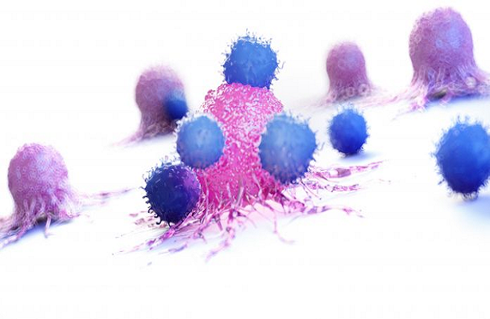

CAR-T Cell: o que falta para o mais avançado tratamento contra o câncer chegar ao Brasil
07/06/2022 19h01 - Atualizado 07/06/2022 19h01
No final de fevereiro, a Anvisa aprovou a primeira terapia genética de células CAR-T para tratamento de câncer no Brasil. Trata-se do tisagenlecleucel, sob o nome comercial Kymriah, da farmacêutica Novartis, desenvolvido em colaboração com a Universidade da Pensilvânia, indicado para pacientes com alguns tipos de leucemia e linfoma não Hodgkin, que não respondem aos tratamentos convencionais e que atendam a alguns critérios de seleção. É uma das mais avançadas tecnologias no combate ao câncer disponível no mundo, e que agora poderá ser utilizada no país. Nos estudos científicos, 83% dos pacientes com leucemia linfoblástica aguda (LLA) tiveram remissão completa da doença.
Médicos e pacientes aguardam com expectativa a chegada dessa terapia no mercado brasileiro, que atualmente está em fase de precificação pela Câmara de Regulação do Mercado de Medicamentos (CMED). Estimativa do Instituto Nacional do Câncer (Inca) aponta que 12 mil novos casos de linfoma não Hodgkin e 10 mil de leucemia ocorrem por ano no Brasil. Com efeitos colaterais conhecidos e controláveis, a grande questão em torno dessa terapia é o preço. Nos Estados Unidos, o Kymiriah custa em torno de 475 mil dólares, o equivalente a 2,4 milhões de reais na cotação atual, sem os custos médicos e de internação.
O alto custo tem a ver com a forma personalizada que esse tratamento é feito e toda a pesquisa desenvolvida até chegar ao resultado final. Diferente dos medicamentos, terapias com células Car-T são produzidas individualmente, ou seja, cada paciente passa por um processo para que o laboratório possa produzir células específicas para combater o seu câncer.
No entanto, existem outras empresas farmacêuticas que possuem tratamento similares, e ainda um CAR-T brasileiro, que pretende diminuir o custo. Em março, foi aprovado no Brasil um segundo tratamento deste tipo, com indicação para pessoas com mieloma múltiplo, que não responderam a tratamentos anteriores. O ciltacabtagene autoleucel, sob o nome comercial de Carvykti, é da farmacêutica Janssen, e, nos Estados Unidos, custa 465 mil dólares. No Brasil, ainda aguarda a precificação. Dos pacientes que receberam o tratamento, 78% obtiveram uma remissão completa.
“Essa terapia envolve vários conceitos inovadores. É uma terapia celular, porque envolve os linfócitos dos pacientes; é uma terapia gênica, porque envolve uma alteração genética; é uma forma de imunoterapia, porque envolve células imune; e é uma forma de medicina personalizada, porque aquele tratamento desenvolvido para aquele paciente não pode ser utilizada por outro. É uma coisa extremamente customizada e desenhada para aquele indivíduo, por mais que tenhamos um padrão aplicado para todos, você utiliza a matéria-prima do próprio paciente”, explica Jayr Schmidt Filho, líder do Centro de Referência de Neoplasias Hematológicas do A.C.Camargo Cancer Center.
O futuro do tratamento para o câncer
“A terapia com células CAR-T representa uma nova era na medicina, uma nova forma de tratar o câncer por meio da reprogramação das células de defesa do corpo, diminuindo os efeitos colaterais associados a outros tipos de terapias, como a quimioterapia. Hoje, de fato, estamos no século das terapias avançadas, inaugurando uma nova fronteira da medicina, da biologia e da genética”, afirma André Abrahão, diretor médico de oncologia da Novartis Brasil.
O Kymriah é considerado pioneiro no mundo, mas outras farmacêuticas também apostam nessa tecnologia. Nos Estados Unidos, já existem outros 5 produtos aprovados pela Food and Drug Administration (FDA). O Yescarta, da Gilead, também atua nos antígenos CD19, e por isso têm indicação semelhante ao Car-T da Novartis, com foco nos pacientes com linfoma não Hodgkin. A taxa de remissão completa foi de 51% dos pacientes, de acordo com as pesquisas. A empresa ainda conta com outro Car-T, o Tecartus, esse indicado para LLA. Ambos custam em torno de 373 mil dólares (1,8 milhões de reais). No Brasil, a empresa anunciou recentemente a contratação de uma nova diretora de acesso ao mercado para trazer essas terapias para o país.
Há ainda o Breyanzi, da Bristol Myers Squibb, que é indicado para linfoma difuso de grandes células B, com custo de 410 mil dólares. A remissão completa ocorreu em 54% dos pacientes que utilizaram a terapia. A grande novidade da empresa, porém, são as células CAR-T para mieloma múltiplo, com foco no antígeno CD38. O Abecma, aprovado em 2021 pelo FDA, teve 28% dos paciente com remissão completa em estudo, mas 72% do total responderam positivamente ao tratamento. O custo é de 419,5 mil dólares.
A Novartis também entrou na corrida pelo seu CAR-T para mieloma múltiplo, com conclusão da fase 1 dos estudos prevista para 2024. “A Novartis está empenhada em ampliar a perspectiva de tratamento com terapias celulares em outras indicações e vem programando pesquisas clínicas em todo mundo para acelerar esta possibilidade. Somente no Brasil, a Novartis vem investindo aproximadamente R$1 bilhão em estudos e pesquisas clínicas nos últimos 4 anos”, indica o diretor médico de oncologia da farmacêutica.
Com o avanço da ciência novas doenças podem ser alvo desta terapia em breve e o custo desses procedimentos podem diminuir ao longo do tempo, seja pela demanda ou pela concorrência. Diversas universidades mundo afora também trabalham no desenvolvimento dos seus próprios Car-T, o que também pode contribuir para se tornar um produto mais barato e acessível.
Car-T Brasileiro
No Brasil, a Faculdade de Medicina de Ribeirão Preto, da Universidade de São Paulo (USP), desenvolve há alguns anos um trabalho com células CAR-T. Em 2019, a faculdade ganhou destaque por ter conseguido tratar um paciente com câncer terminal, que não respondeu a quatro linhas convencionais de tratamentos, mas que ao utilizar esse método inovador entrou em remissão.
Vamberto Luiz de Castro havia sido o primeiro paciente da América Latina a receber esse tipo de terapia. Ele havia sido diagnosticado em 2017 com um linfoma não Hodgkin. Dois meses após a divulgação dos resultados, o paciente morreu em um acidente de carro. Até o momento, a FMRP já realizou tratamento com mais três pacientes que atingiram efetividades animadores.
“O que fazemos aqui é um processo muito semelhante ao princípio dos CAR-T Cell disponíveis no mercado. É feito em Ribeirão Preto, ou seja, é nacional, com uma tecnologia nossa, mas que ainda precisa avançar para chegar ao mesmo nível de desenvolvimento daquilo que foi aprovado pela Anvisa”, explica Renato Cunha, professor da Divisão de Hematologia, Hemoterapia e Terapia Celular do Departamento de Imagens Médica, Hematologia e Oncologia Clínica da Faculdade de Medicina de Ribeirão Preto (FMRP) da USP.
Essa terapia é oferecida pelo Hospital das Clínicas de Ribeirão Preto como tratamento compassivo, autorizado pela Anvisa. Isso quer dizer que ele é feito em caráter experimental com produtos com potencial de efetividade, para pacientes que esgotaram as alternativas de tratamento. É uma fase anterior aos estudos clínicos.
A pandemia de Covid-19 atrapalhou o desenvolvimento do CAR-T brasileiro, porque os leitos do hospital foram direcionados para o atendimento de pacientes com casos graves da doença. No entanto, o Instituto Butantan pretende realizar um ensaio clínico ainda este ano envolvendo 30 pacientes com linfoma não Hodgkin de células B, em uma parceria com a Faculdade de Medicina da Universidade de São Paulo (FMUSP), Faculdade de Medicina de Ribeirão Preto (FMRP-USP) e Hemocentro de Ribeirão Preto. Para isso e pensando em ampliar o acesso ao tratamento, dois centros foram inaugurados em junho. Um é o Núcleo de Terapia Celular e Molecular (Nucel), localizado na USP de São Paulo, e o Núcleo de Terapia Avançada (Nutera), na própria Ribeirão Preto.
Eles possuem toda estrutura necessária para realizar o tratamento com CAR-T. Estima-se que ambos terão capacidade para atender 300 pacientes por ano. Caso chegue ao mercado, esse procedimento deve custar muito abaixo da Novartis e da Gilead, em torno de 150 mil reais.
“Independente se é nacional ou não, a aprovação do CAR-T Cell no Brasil é um marco. O país entra definitivamente na era das células geneticamente modificadas, é uma modalidade de tratamento com bastante tecnologia envolvida. Isso mostra que o Brasil está sob os olhares das grandes indústrias farmacêuticas, somos um mercado importante para elas. C hegar ao Brasil depois de 5 anos aprovada nos Estados Unidos é um tempo rápido. Temos que comemorar essa aprovação e torcer para que ela chegue ao SUS o quanto antes”, defende Renato.
Como funciona essa terapia
As células CAR-T, acrônimo para receptores de antígeno quimérico de células T, são uma revolução pois inovam a forma que um tratamento é feito. Nele, filtra-se o sangue do paciente para retirar as células de defesa, os linfócitos T, que são responsáveis por atacar os cânceres, mas que com o tempo elas perdem a capacidade de defesa. Esses linfócitos são levados para um laboratório que o modificam geneticamente com um vetor viral, criando assim um receptor que reconhece e se conecta às células tumorais, especificamente aos antígenos presentes na superfície. Além disso, os linfócitos são multiplicados e expandidos, para atingir a concentração ideal para eliminar a doença. O paciente então recebe uma infusão com essas células para que elas façam seu trabalho.
No caso do Kymriah, ele ataca os antígenos CD19, presentes nas neoplasias linfóides de células B, por isso ele é específico para algumas doenças. A indicação é para que seja utilizado em pacientes pediátricos e adultos até 25 anos com leucemia linfoblástica aguda de células B, e adultos com um tipo de linfoma não Hodgkin, o linfoma difuso de grandes células B (LDGCB), que não responderam ao tratamento padrão, em recidiva ou refratário.
O papel do centro de referência
Alguns efeitos adversos podem ocorrer durante o processo. A síndrome de liberação de citocinas é uma delas, uma espécie de inflamação sistêmica que pode causar febre, alterações pulmonares e queda na pressão arterial. Por isso, é muito importante que o paciente tenha o suporte de um hospital, já que pode precisar de um atendimento de terapia intensiva. Da mesma forma, podem ocorrer alterações neurológicas, causando confusão mental, desorientação, alterações de escrita e fala.
“Essas complicações já possuem diretrizes para o manejo. Já vimos muito o que aconteceu nos outros países e já aprendemos com o que foi publicado. Basta que o centro esteja treinado e consiga aplicá-las, os profissionais cuidando do paciente entendam o que estão fazendo, e aí a gente consegue manejar essa complicações”, explica Jayr.
O A. C. Camargo Cancer Center é um dos 4 hospitais credenciados no Brasil e que contam com a estrutura necessária para realizar essa terapia. Além disso, os profissionais receberam treinamentos específicos, já que é uma tecnologia nova e demanda uma atualização. A coleta dos leucócitos é realizada no hospital e enviada ao laboratório da Novartis nos Estados Unidos, onde é feito toda a modificação das células, e ao retornar é infusionado na unidade de saúde. Os pacientes já têm buscado o hospital para saber a disponibilidade da terapia.
“Aqueles que são elegíveis já estão procurando e temos uma demanda externa de pessoas querendo passar por uma avaliação. A partir do momento que tivermos a precificação e o acesso muito bem definido, a gente pode de fato fazer. Mas deixamos os pacientes no radar, em acompanhamento conosco, muitas vezes submetidos a outros tipos de terapias, até termos esse acesso às células Car-T”, aponta o médico.